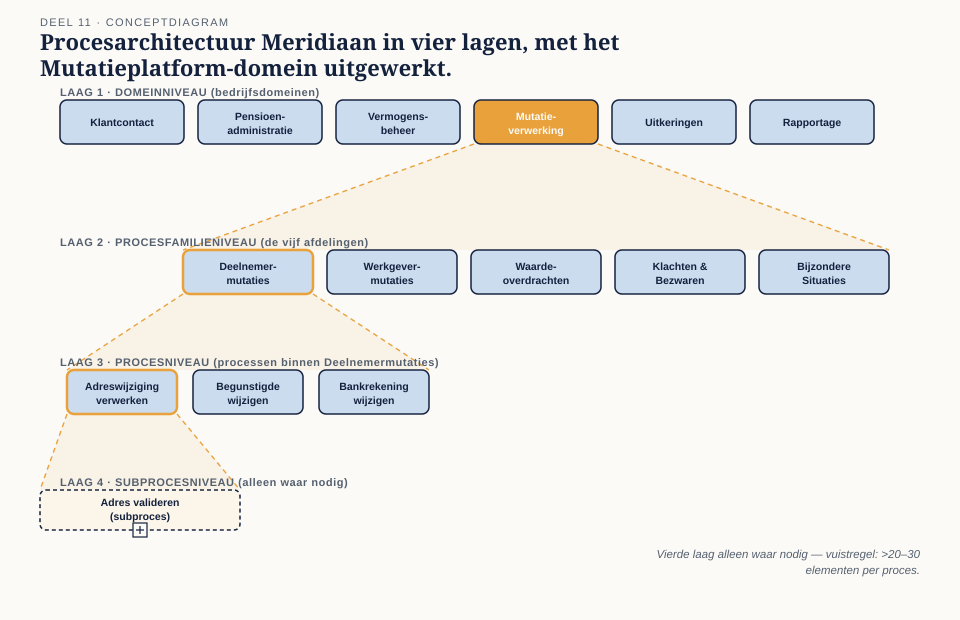

Deel 11 — Procesarchitectuur en modelleerconventies
Slidedeck · Ductus-cursus BPMN, CMMN & DMN · niveau 2 · deel 11 van 30 · 24 slides
Slide 1 — Titelslide
Procesarchitectuur en modelleerconventies — Deel 11
Beeldmerk, "Niveau 2 — Praktijk: opening"
Spreeknotitie: Welkom terug. Dit is een ander soort niveau dan het eerste.
Slide 2 — Leerdoelen
Na vandaag kun je…
Vier leerdoelen uit de reader
Spreeknotitie: Kort.
Slide 3 — Wat verandert er?
Van "correct volgens de regels" naar "bruikbaar voor een opdrachtgever"
Twee kolommen naast elkaar: niveau 1 versus niveau 2
Spreeknotitie: Zet dit hard neer — dit is de belangrijkste boodschap van vandaag, belangrijker dan elke paragraaf.
Slide 4 — Geen modelantwoord meer
Een modelleerrichtlijn heeft geen "juist" antwoord
Twee voorbeeldrichtlijnen naast elkaar, allebei verdedigbaar, verschillend
Spreeknotitie: Wees hier expliciet over voordat de vragen komen.
Slide 5 — Programma Mutatieplatform
De casus voor heel niveau 2
Vijf afdelingen op een rij, met het legacy-systeem eronder
Spreeknotitie: Neem de tijd — onduidelijkheid hier plant zich voort door de rest van niveau 2.
Slide 6 — Eén doorlopende deliverableset
Elk deel voegt iets toe, de capstone bundelt
Tijdlijn deel 11 tot en met 22 met de bijbehorende deliverable per deel
Spreeknotitie: Vandaag: procesarchitectuur en modelleerrichtlijn — de basis voor alles wat volgt.
Slide 7 — Van procesplaat naar procesmodel
Vier lagen

Figuur 11.1, leeg
Spreeknotitie: Domein, procesfamilie, proces, subproces.
Slide 8 — Ingevuld voor Meridiaan
Mutatieverwerking als domein
Figuur 11.1, gevuld met de vijf afdelingen op procesfamilieniveau
Spreeknotitie: De vuistregel: een laag toevoegen bij twintig tot dertig elementen.
Slide 9 — Opdracht 1
Bouw de procesplaat — hoofdproces, ondersteunend, besturend
Werkboekverwijzing, timer 20 minuten
Spreeknotitie: Individueel, plenair nabespreken. Verwacht dat overlap wordt gevonden — dat is de opzet.
Slide 10 — Het overlapprobleem
Adreswijziging of e-mailmutatie — of allebei?
Herhaling uit niveau 1, deel 1
Spreeknotitie: Bij het Mutatieplatform is dit structureel, niet incidenteel.
Slide 11 — Drie criteria voor afbakening
Eigenaarschap · trigger · uitkomst
§11.2 als genummerde lijst
Spreeknotitie: In aflopende volgorde van gewicht — maar ze wegen soms tegenstrijdig.
Slide 12 — Opdracht 2
Twee snijvarianten — per afdeling, of per procesfamilie
Werkboekverwijzing, timer 30 minuten
Spreeknotitie: Individueel, dan klassikaal vergelijken. Er is geen winnaar — laat de zaal verdeeld zijn.
Slide 13 — De modelleerrichtlijn als deliverable
Een document dat een organisatie vaststelt
 Figuur 11.3, opbouw van het document
Figuur 11.3, opbouw van het document
Spreeknotitie: Niet dertig pagina's — kort genoeg om in één zitting te lezen.
Slide 14 — Wat elke regel nodig heeft
De regel · de motivatie · goed en fout voorbeeld · status
Eén voorbeeldregel volledig uitgewerkt
Spreeknotitie: Dit is het format dat opdracht 3 vraagt.
Slide 15 — Verplicht of aanbevolen
Machinaal toetsbaar — of een kwestie van oordeel
Twee kolommen met voorbeeldregels
Spreeknotitie: Structurele regels (poolgrenzen, splitsing/samenkomst) horen bijna altijd bij verplicht.
Slide 16 — Twee manieren om het fout te doen
Alles verplicht — of alles aanbevolen
Twee scenario's: eindeloze reviewdiscussies, versus een richtlijn zonder tanden
Spreeknotitie: De balans hiertussen is de belangrijkste ontwerpkeuze van dit deel.
Slide 17 — Opdracht 3
Schrijf de modelleerrichtlijn — de kerndeliverable
Werkboekverwijzing, eisen op een rij
Spreeknotitie: Start nu in de les, afronden buiten de les. Neem de tijd door te lopen en vragen te beantwoorden.
Slide 18 — Reviewrollen
Peer review · inhoudelijke review
Twee rollen naast elkaar met wat elk toetst
Spreeknotitie: Structuur en stijl versus "klopt het met de werkelijkheid".
Slide 19 — Wat je wel en niet bespreekt
Eerst machinaal, dan inhoudelijk, dan — spaarzaam — stijl
Drie lagen van een review, in volgorde
Spreeknotitie: Vermenging van deze drie is waar reviews verzanden.
Slide 20 — Het risico van een politiekorps
Snel, voorspelbaar, constructief
Drie eisen aan een werkend reviewproces
Spreeknotitie: Kort.
Slide 21 — Opdracht 4
Modelleer je eigen reviewprotocol — in BPMN
Werkboekverwijzing
Spreeknotitie: Een bewuste toepassing van je eigen vak op je eigen proces.
Slide 22 — Wanneer is een model "af"?
Niet foutloos — herbruikbaar
Drie criteria: begrijpelijk zonder de maker, past in de architectuur, heeft een eigenaar
Spreeknotitie: Verwijzing naar de Meridiaan-bibliotheek uit niveau 1, deel 2 — nuttig bij oplevering, waardeloos zonder onderhoud.
Slide 23 — Opdracht 5 en 6
Peer review van je richtlijn — en stellingen
Werkboekverwijzing
Spreeknotitie: Tweetallen, dan plenair.
Slide 24 — Vooruitblik
Deel 12 — procesanalyse en -ontwerp
Korte aankondiging: discovery, event storming, as-is of niet
Spreeknotitie: De procesarchitectuur en richtlijn van vandaag zijn het kader voor de rest van niveau 2 — bewaar ze.